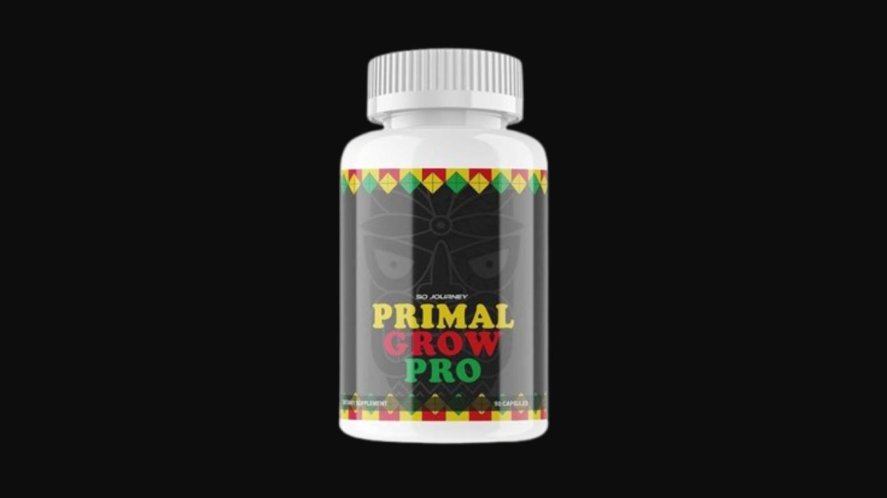

I analyzed all key ingredients — L-Arginine, Tongkat Ali, Korean Ginseng, and Icariin — against published research. Here's the honest truth about what this formula genuinely delivers and what it doesn't.
▶ Watch our full Primal Grow Pro video review before buying

Primal Grow Pro contains a solid combination of male sexual health ingredients — L-Arginine, Tongkat Ali, Korean Ginseng, Icariin from Horny Goat Weed, Saw Palmetto, and Maca Root — each with published research supporting their effects on blood flow, erectile function, testosterone support, and libido. Where the formula genuinely delivers is in improved erection quality, increased confidence, better stamina, and enhanced libido. The 60-day guarantee makes it a reasonable low-risk trial. Evaluate it for what the ingredients actually do — which is meaningful and documented.
Primal Grow Pro is a natural male enhancement supplement manufactured in an FDA-approved, GMP-certified facility in the USA. It combines herbal extracts, amino acids, and minerals targeting the physiological drivers of male sexual performance — primarily nitric oxide production, testosterone support, and natural PDE5 inhibition.
Sold through BuyGoods with a 60-day money-back guarantee. All natural, non-GMO, gluten-free, vegetarian-friendly. One capsule taken daily, 10-15 minutes before a meal.
The primary vasodilatory ingredient. L-Arginine is a precursor to nitric oxide, which relaxes smooth muscle in blood vessel walls and enables increased blood flow to erectile tissue. Research confirms L-Arginine supplementation supports erectile function in men with mild to moderate erectile dysfunction by improving the vascular mechanism that enables erections. Combined with Icariin, the vasodilatory effects are significantly amplified.
One of the most studied herbs for male hormone support. A Journal of the International Society of Sports Nutrition trial showed significant testosterone increases in just 4 weeks. Tongkat Ali reduces sex hormone binding globulin (SHBG) — freeing more testosterone for active use — and supports cortisol reduction, which is a primary testosterone suppressor in chronically stressed men.
Among the most studied herbs for erectile function. Korean Ginseng's active compounds (ginsenosides) improve nitric oxide synthesis, support dopamine pathways involved in sexual motivation, and reduce the psychological and physiological stress that inhibits performance. Multiple meta-analyses confirm Korean Ginseng produces meaningful improvements in erectile function scores.
Contains icariin — a flavonoid that inhibits phosphodiesterase type 5 (PDE5), the same enzyme targeted by pharmaceutical ED medications. By inhibiting PDE5, icariin allows cyclic GMP to accumulate in erectile tissue, enabling and sustaining erections. This is the same mechanism as prescription treatments — through a natural, lower-risk pathway. Multiple studies confirm icariin's PDE5 inhibitory activity.
Supports healthy prostate function and DHT balance. Elevated DHT (dihydrotestosterone) can suppress testosterone availability and contribute to prostate issues that affect sexual function. Saw Palmetto moderates this balance, supporting both prostate health and a favorable hormonal environment for male sexual function.
An Andean adaptogen with one of the strongest evidence bases for libido enhancement independent of hormonal changes. Research confirms maca increases sexual desire, reduces sexual dysfunction, improves sperm quality, and supports energy and endurance — making it a comprehensive libido support ingredient that complements the testosterone and blood flow mechanisms of the other ingredients.
Zinc is essential for testosterone synthesis — deficiency directly causes testosterone decline. Vitamin E is a lipid-soluble antioxidant that protects erectile tissue from oxidative damage and supports healthy circulation. Both are frequently deficient in modern diets and both directly support male sexual health when supplemented.
"This product has really transformed my life. My performance has improved, and I feel more energetic. I've shared it with friends, and they've been just as happy with the results."
"This product has really helped me. It improved my relationship by addressing performance issues and strengthened our emotional bond. I feel like a better version of myself now. I highly recommend it."
"I've been using this product for a while, and it has really improved my performance and confidence. I feel more energetic and capable, which has positively impacted my personal life and work."
60-Day Guarantee · Natural Ingredients · FDA-Approved Facility · Made in USA
→ Visit Official Primal Grow Pro WebsiteCheck the official website for current promotional pricing — significant discounts are often available.
60-Day Guarantee · Natural Ingredients · FDA-Approved Facility
→ Get Primal Grow Pro at the Official PriceAffiliate Disclosure: This review contains affiliate links. We may earn a commission at no additional cost to you. See our Affiliate Disclosure. Not evaluated by the FDA. Not intended to diagnose, treat, cure, or prevent any disease.